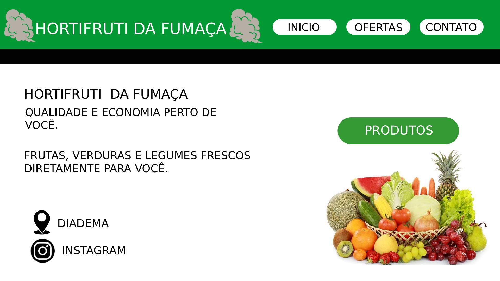

Projetos
Wireframe
Um wireframe é um esboço visual simples que representa a estrutura de uma página de um site ou de um aplicativo, comparável à "planta baixa" de uma construção. Realizei esse wireframe na aula de Design Digital utilizando a ferramenta Photopea.

Logo Pessoal
A logo pessoal é utilizada digitalmente para fins de assinaturas individuais. Na ideia de construção da minha logo quis juntar as primeiras siglas do meu nome e sobrenome, criando diversos modelos até chegar nessa versão, foi criada na ferramenta de vetor Inkscape(utilização somente com download).

Prova 1
A prova 1 que foi realizada na aula de Desenvolvimento Web na Fatec, teve o objetivo do aluno mostrar as ferramentas que aprendeu em HTML (CSS não tinha sido introduzido na matéria ainda) no primeiro mês e meio de aula. Veja o site publicado aqui.(Também está no meu repositório do github)
Projeto Integrador
O projeto integrador é um projeto coletivo semestral para colocar em prática todas as matérias passadas na faculdade. O meu grupo feito por seis pessoas, teve como ideia de criar um site para divulgação, candidatar-se e explorar diversas vagas de emprego, tendo também opção para cursos online na plataforma. (O projeto continua em desenvolvimento por isso pode ao acessar o site publicado pode ter alguns erros ou imposições) Para ver o repositório do grupo no Projeto Integrador acesse aqui.